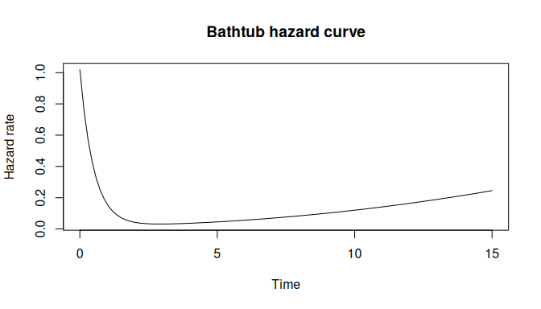
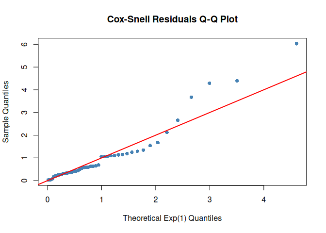

Dynamic Failure Rate Distributions for Survival Analysis
Capacitors that wear out faster than any Weibull can describe. Software systems with bathtub-shaped crash rates. Post-surgical patients whose risk drops sharply, then slowly climbs again. Standard parametric survival families cannot express these hazard patterns — but dfr.dist can.
Write the hazard function you need — any R function of time and parameters — and the package derives everything else: survival curves, CDFs, densities, quantiles, sampling, log-likelihoods, MLE fitting, and residual diagnostics.
Why dfr.dist?
| Feature | dfr.dist | survival | flexsurv |
|---|---|---|---|
| Custom hazard functions | Yes | No | Limited |
| Built-in distributions | Exp, Weibull, Gompertz, Log-logistic | Weibull, Exp | Many |
| User-supplied derivatives | score + Hessian | No | No |
| Censoring support | Right + Left | Right | Right |
| Model diagnostics | Cox-Snell, Martingale, Q-Q | Limited | Limited |
| Likelihood model interface | Full | Basic | Partial |
Features
- Flexible hazard specification: Define any hazard function h(t, par, …)
- Built-in distributions: Exponential, Weibull, Gompertz, Log-logistic with optimized implementations
- Complete distribution interface: hazard, survival, CDF, PDF, quantiles, sampling
- Likelihood model support: Log-likelihood, score, Hessian for MLE
- Custom derivatives: Supply analytical score and Hessian functions, or let the package fall back to numerical differentiation via numDeriv
- Model diagnostics: Residuals (Cox-Snell, Martingale) and Q-Q plots
- Censoring support: Handle exact, right-censored, and left-censored survival data
-
Ecosystem integration: Works with
algebraic.dist,likelihood.model,algebraic.mle
Installation
Install from GitHub:
# install.packages("devtools")
devtools::install_github("queelius/dfr.dist")Quick Start
Built-in Distributions
Use the convenient constructors for classic survival distributions:
# Exponential: constant hazard (memoryless)
exp_dist <- dfr_exponential(lambda = 0.5)
# Weibull: power-law hazard (wear-out or infant mortality)
weib_dist <- dfr_weibull(shape = 2, scale = 3)
# Gompertz: exponentially increasing hazard (aging)
gomp_dist <- dfr_gompertz(a = 0.01, b = 0.1)
# Log-logistic: non-monotonic hazard (increases then decreases)
ll_dist <- dfr_loglogistic(alpha = 10, beta = 2)All distribution functions are automatically available:
Maximum Likelihood Estimation
# Simulate failure times
set.seed(42)
times <- rexp(50, rate = 1)
df <- data.frame(t = times, delta = 1)
# Fit via MLE
solver <- fit(dfr_exponential())
result <- solver(df, par = c(0.5), method = "BFGS")
coef(result) # Estimated rate
#> [1] 0.8808457Custom Hazard Functions
Model complex failure patterns like bathtub curves:
# h(t) = a*exp(-b*t) + c + d*t^k
# Infant mortality + useful life + wear-out
bathtub <- dfr_dist(
rate = function(t, par, ...) {
par[1] * exp(-par[2] * t) + par[3] + par[4] * t^par[5]
},
par = c(a = 1, b = 2, c = 0.02, d = 0.001, k = 2)
)
h <- hazard(bathtub)
curve(sapply(x, h), 0, 15, xlab = "Time", ylab = "Hazard rate",
main = "Bathtub hazard curve")
Model Diagnostics
Check model fit with residual analysis:
# Fit exponential to data
fitted_exp <- dfr_exponential(lambda = coef(result))
# Cox-Snell residuals Q-Q plot
qqplot_residuals(fitted_exp, df)
Mathematical Background
For a lifetime , the hazard function is:
From the hazard, all other quantities follow:
| Function | Formula | Method |
|---|---|---|
| Cumulative hazard | cum_haz() |
|
| Survival | surv() |
|
| CDF | cdf() |
|
density() |
Likelihood for Survival Data
For exact observations:
For right-censored:
# Mixed data with censoring
df <- data.frame(
t = c(1, 2, 3, 4, 5),
delta = c(1, 1, 0, 1, 0) # 1 = exact, 0 = censored
)
ll <- loglik(dfr_exponential())
ll(df, par = c(0.5))
#> [1] -9.579442Documentation
Start Here:
- Package Overview - Motivation, complete example, and audience guide
- Quick Start Guide - 5-minute introduction
Real-World Applications:
- Reliability Engineering - Five case studies
Going Deeper:
- Dynamic Failure Rate Distributions - Mathematical foundations
- Creating Custom Distributions - The three-level optimization paradigm
- Custom Derivatives for MLE - Analytical score and Hessian functions
Reference:
Related Packages
-
algebraic.dist: Generic distribution interface -
likelihood.model: Likelihood model framework -
algebraic.mle: MLE utilities